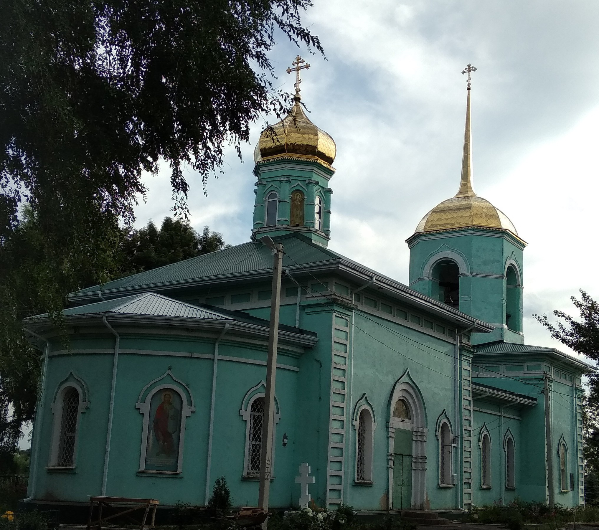

Каменная церковь во имя архистратига Михаила была построена на средства прихожан в 1861 году. К квадратному в плане основному объёму храма с востока примыкает полуциркульная в плане алтарная апсида, с запада – прямоугольная в плане трапезная в три световых оси и двухъярусная колокольня. Церковь венчает небольшой восьмигранный световой барабан с граненной луковичной главкой. Углы северного и южного фасада основного объема, а так же северного и южного фасада притвора обработаны филенчатыми пилястрами. Горизонтали линии карниза тех же частей здания подчёркивает филенчатый фриз. Прямоугольные с полуциркульным завершением оконные проёмы декорированы наличниками с килевидными архивольтами. По центру северного и южного фасадов прорезаны дверные проёмы, обработанные перспективными порталами с наборными колонками и килевидными архивольтами. Восьмигранный в плане ярус звона колокольни прорезан арочными проёмами по сторонам света. Колокольню венчает плоское восьмигранное покрытие со шпилем. В архитектуре здания черты объёмно-пространственной характеристики эпохи позднего классицизма сочетаются с элементами эклектического декора. Состоит на охране государства как памятник архитектуры регионального значения.
Одним из последних священников был Филин Дмитрий Яковлевич, 1884 г.р., уроженец и житель с. Плоская Кузьминка Липецкого района. Постановлением тройки ПП ОГПУ по ЦЧО от 27.08.1932 по ст. ст. 58-10, 58-11 приговорён к 10 годам лишения свободы.
Последним священником стал Фаустов Дмитрий Антонович. Родился 19 января 1901 года в с. Плоская Кузьминка в семье крестьянина. Окончил один класс Тамбовской Духовной Семинарии. В 1920—1922 гг. служил в Красной Армии. Затем в сане священника служил в церкви Михаила Архангела. 28 июля 1928 был арестован по обвинению по ст. 76 УК РСФСР («Хулиганство»), Народным судом приговорён к 6 месяцам заключения с учётом предварительного заключения с отбытием срока наказания в Липецкой тюрьме. После отбытия срока наказания Д.А. Фаустов продолжил служение в сане священника. 4 августа 1937 году был арестован по групповому делу «Следственное дело епископа Александра Торопова и др. Липецк. 1937г.» и вновь заключён в Липецкой тюрьме. Ему было предъявлено обвинение по ст.58-10 ч.2, 58-11 УК РСФСР. «Тройкой» при УНКВД СССР по Воронежской области 15 октября 1937 г. Фаустов Д.А. был осуждён за «Участие в церковно-монархической организации» и приговорён к высшей мере наказания – расстрелу… 17 сентября 1960 года президиумом Липецкого областного суда был реабилитирован.
Сейчас настоятелем Михайло-Архангельского храма является протоиерей Вячеслав Бондаренко. Храм восстанавливался с 2016 года и был восстановлен в 2023 году.
Церковь Михаила Архангела каменная, с колокольнею, построена в 1861 г., считалась приписною к Варваровской церкви села Борок. Был при ней особый причт, земли пахотной 33 дес, прихожан было 600 душ.